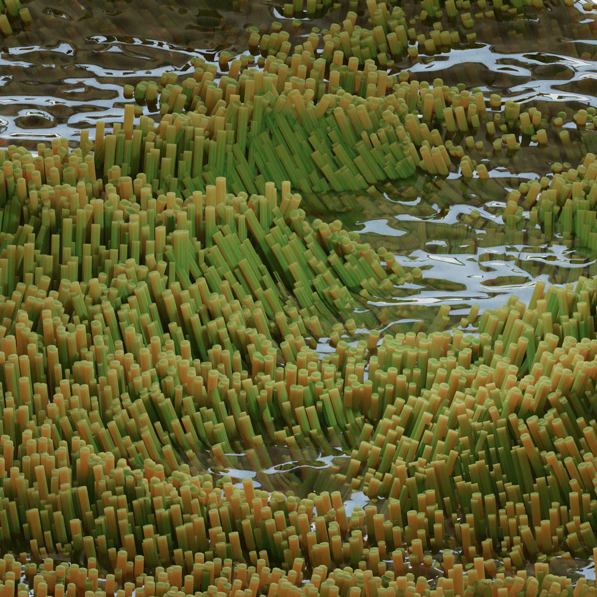
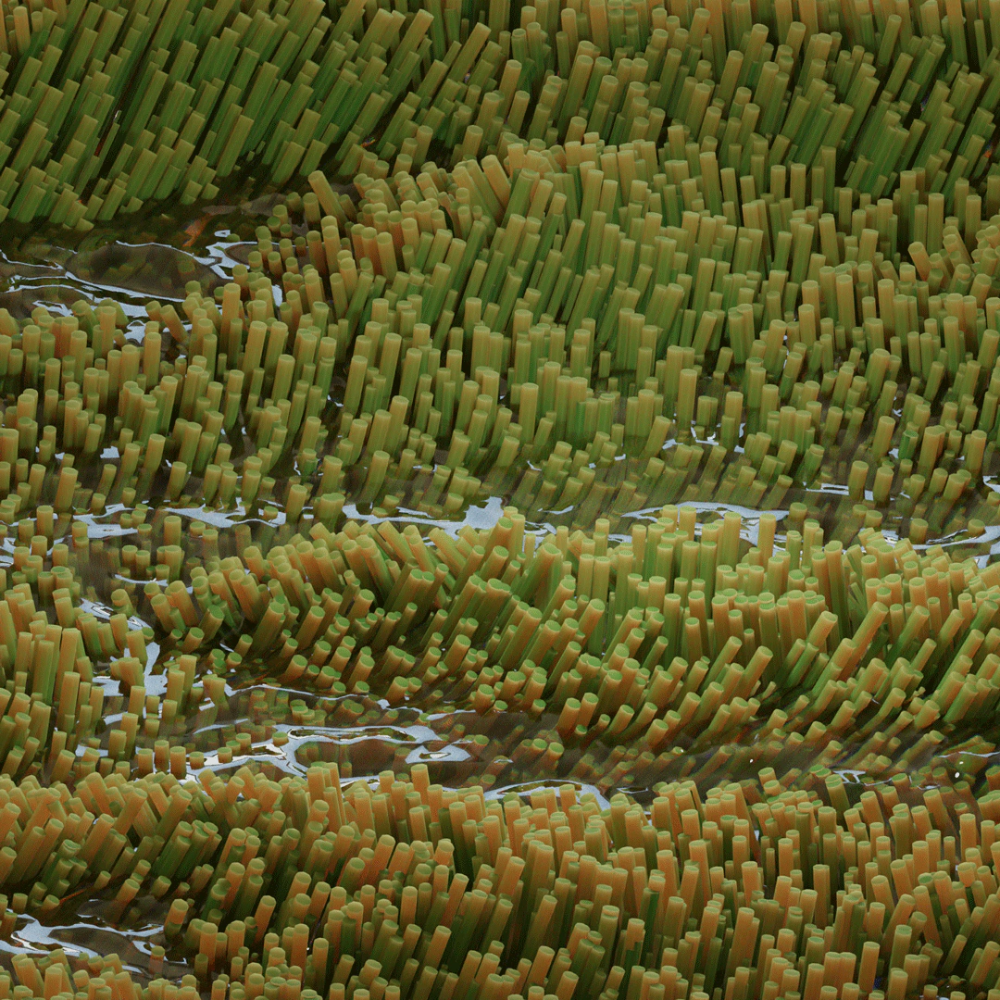
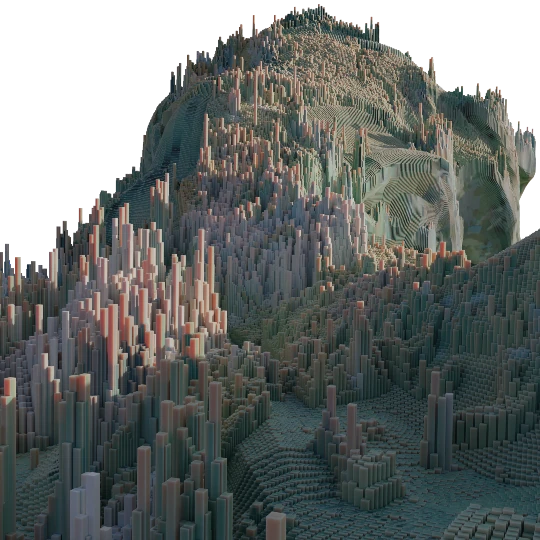
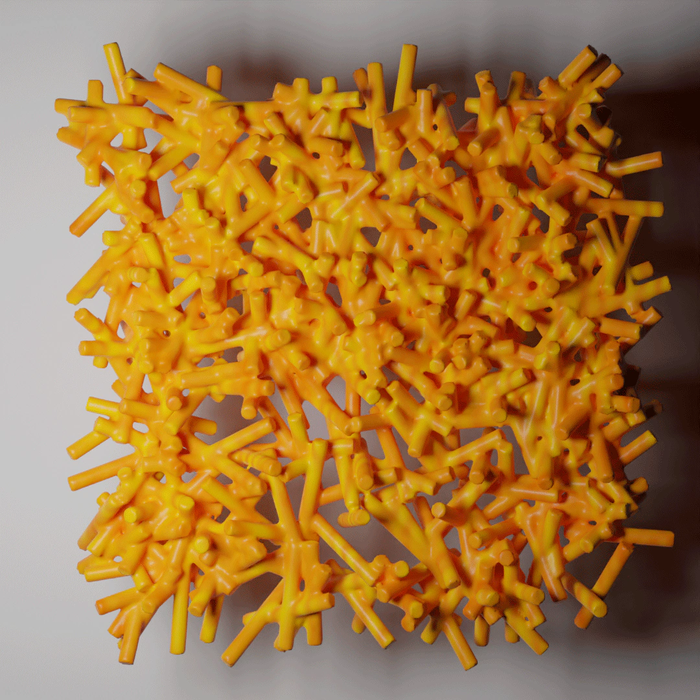

PERSONAL WORK
Custom tools and dynamic systems for procedural animation and generative art workflows. Includes a published Blender plugin for geometry-node-driven animation systems, Houdini procedural rigs, and various experimental real-time generative systems built in Unreal Engine.



